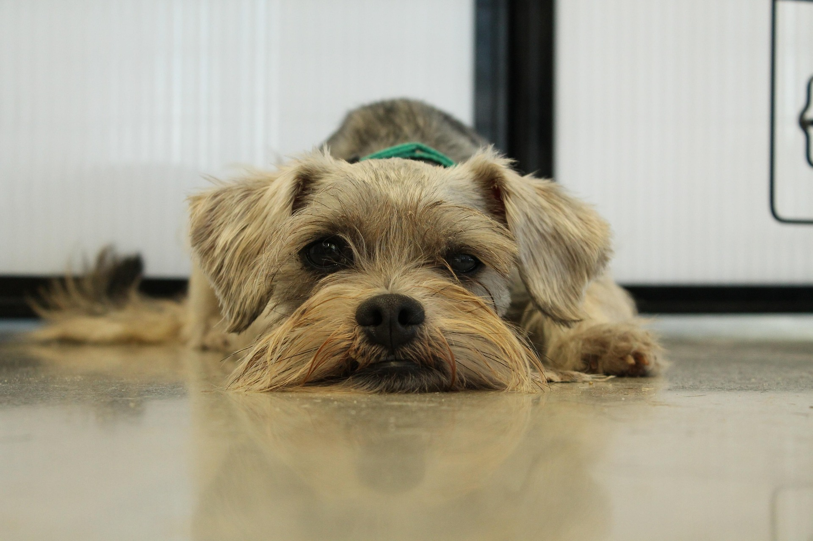
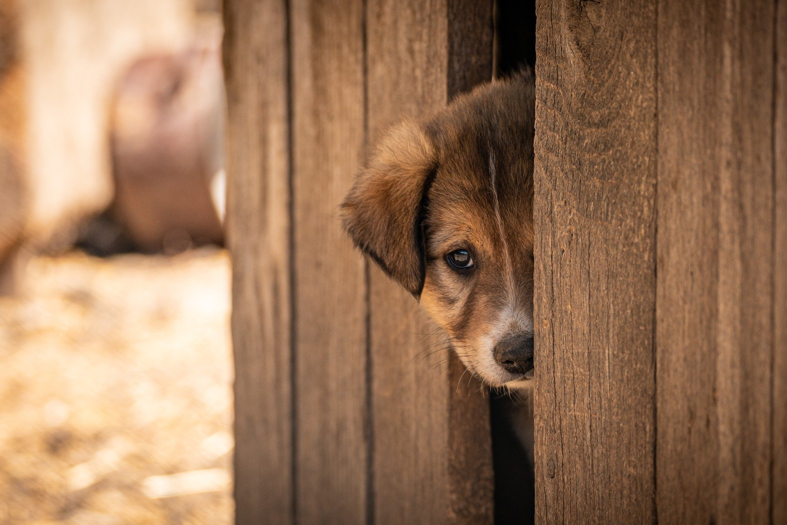
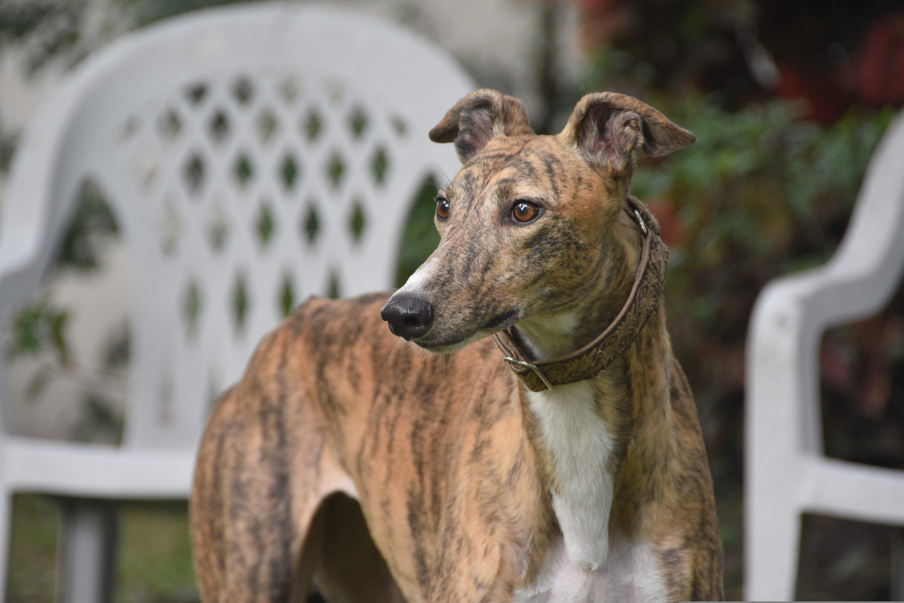
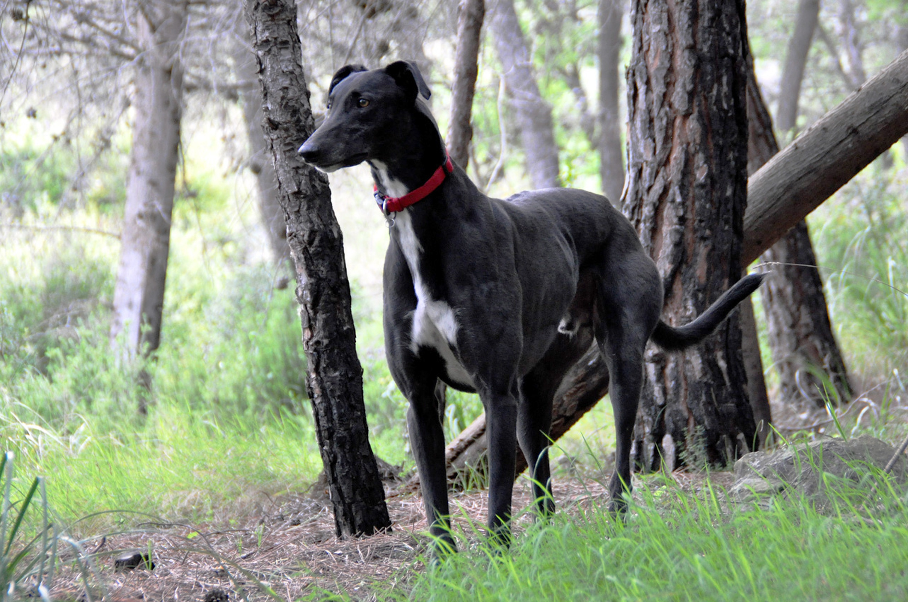

This is a collage project


Why you should abopt insted of shop
There are so many benefits to adopting a pet from a shelter compared to buying from breeders or online, with the risk of supporting puppy farms and all the welfare and cruelty issues involved in breeding pets mainly for financial gain.
Cost benefits:
You can save hundreds of euros by adopting rather than purchasing. The shelter will ask for a reasonable adoption fee (which will vary depending on species, size and age of the pet). This fee will save you the cost of neutering, microchipping, vaccination, up to date worming and parasite treatments etc. as all of this will be done by the shelter before you take the animal home. You may also get free pet health insurance cover for a number of weeks by signing up at the shelter.
Health benefits:
It is good to know when you adopt from a charity that they have the pet's health and welfare as their main concern. The pet will have been fully checked out by a vet and have had any treatments needed for any illness or injury. They will only be made available for homing when they have been given a clean bill of health. Contrast this with an online purchase or even a trip to a breeder, where you might pay a lot for a pet that could have built- in genetic defects (especially with in-breeding) and need very expensive treatments as they grow. Examples are flat-faced breeds that struggle to breath, King Charles Spaniels with painful spinal issues, Dacshunds with slipped discs and many breeds with poor hips and knee joints - all needing thousands of euros spent on surgery. The Shelter staff will be able to advise you in detail of any likely conditions to look out for in a new pet, but the 'mongrel' or crossbreed is much less likely to develop genetic and hereditary conditions and will have no extreme body conformation likely to cause pain and distress. You will be fully informed of the veterinary history of the pet since it arrived at the shelter and as most pets will be young and healthy you can be confident taking them home that there will be no nasty shocks in store, and help and advice available if your new pet becomes unwell. There are often older pets seeking a caring home too, after their owner has died for example. They may have some ailments but that will be brought to your attention and lots of advice given if you decide to take that pet on and care for it.
Emotional and Behavioural benefits:
A big benefit of accepting a dog or cat from a shelter is that they will have been assessed emotionally as well as physically and any behavioural issues will have been worked on and this will form part of the assessment as to whether this pet is a good option for you or not. A dog purchased elsewhere is an 'unknown quantity' regarding temperament, previous socialisation, how well they get on with children etc. This knowledge is invaluable in choosing the right pet for you and guidance from Shelter staff can be ongoing during the settling in period. The pet you choose may have had a difficult history but shelter staff will advise if you are the right person to rehome them and work gently with them at changing their behaviour. Your personal, family, and home environment will all be taken into account to help you find the 'right match.'
Benefits of Pet Companionship:
There is a big 'feel - good' factor in adopting an unwanted pet and giving them a new caring and loving home. Although it takes commitment and an awareness of the responsibility you are taking on, the companionship and the affectionate bond that will develop between you will bring many benefits. Doing good increases wellbeing! Developing friendship with a pet demands that you know your pet's needs and are able to meet them. The more these needs are met the better the relationship between you. You can rely on Shelter staff to make you aware of your new pet's particular needs and you can get advice and help from your vet, trainer, or a behaviourist if there are any problems going forward. In meeting needs like stroking and petting, play and exercise for your pet you will also be meeting your own needs and positive chemicals are released in both you and your pet as you interact with each other. Pet companionship has been shown scientifically to lower blood pressure, induce relaxation and reduce stress. Children gain a lot too and develop more empathy towards others. Elderly people get out more and engage with other pet-owners and benefit from the routines of pet-care and from sharing their home with a pet when they live alone. For more information...
| 2024 | 2023 | 2022 | |
|---|---|---|---|
| Stray | 3,610 | 5,546 | 5,045 |
| Surrendered | 1,051 | 1,819 | 2,064 |
| Seized | 161 | 145 | 243 |
| Total | 4,822 | 7,510 | 7,352 |
End Breeding Cruelty


